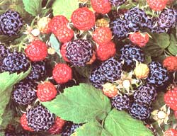

The richest flavored are varieties of black and purple raspberries. Black raspberries (sometimes called blackcaps) are firmer than red raspberries and somewhat bolder in taste. Purple raspberries are a hybrid of the red and black types, yielding large and richly flavored berries. Yellow raspberries develop a light pink blush when fully ripe, and are sweeter and more tender than the red types. All colors are highly aromatic and deliciously sweet with floral undertones.
Raspberries are high in fiber and vitamin C, and are a rich source of the anticancer compound ellagic acid. Black raspberries are especially fruitful in antioxidant and cancerpreventive agents. Fresh raspberries are highly perishable and are best used within one to two days for peak quality, flavor and nutrient content. Rinse berries with cold water just before using.
If your raspberry patch only provides enough berries for fresh eating, you can buy larger quantities for preserving at local produce stands or farmer's markets. Prices will vary, but you can usually find flats (12 pints) priced around $14 per flat. The best way to preserve berries for winter use is by freezing, drying into fruit leather, or turning into jams or preserves.
Freezing is simple: Freeze whole berries on a tray or cookie sheet, then pack loosely in freezer bags. To freeze raspberries packed in sugar, gently mix 1/2 cup sugar to each quart of raspberries and fill freezer containers to within 1 inch of the top. To freeze raspberries packed in syrup, fill freezer containers with berries (leave a headspace) and cover with a syrup made of equal parts honey and water, or 3 cups sugar and 4 cups water.
Use frozen berries in pies, tarts, cobblers and muffins. Sprinkle over hot cereal, stir into yogurt or make a quick raspberry spread by mixing 2 tablespoons crushed berries with 1/3 cup soft margarine and 1/2 teaspoon cinnamon. Cook them into puddings and sauces, or make jam during winter after garden chores have died down.
For a quick and delicious jam, add 1 cup frozen raspberries and Y cup sugar in a saucepan, bring to a boil and cook for five minutes. Pour berry mixture into a blender and process for 15 seconds or until thick. For more fruit flavor and fewer calories, why not make a low-sugar or no-sugar jam? Pomona's Universal Pectin, available in supermarkets or natural food stores, makes it simple with easy-to-follow, instructions and recipes.
With today's choice of varieties, you can enjoy fresh raspberries from early summer to fall whether you grow them yourself or buy them by the basketful. Raspberries can easily be grown throughout the country and come in a diversity of delicate hues including red, purple, black and yellow.
The richest flavored are varieties of black and purple raspberries. Black raspberries (sometimes called blackcaps) are firmer than red raspberries and somewhat bolder in taste. Purple raspberries are a hybrid of the red and black types, yielding large and richly flavored berries. Yellow raspberries develop a light pink blush when fully ripe, and are sweeter and more tender than the red types. All colors are highly aromatic and deliciously sweet with floral undertones.
Raspberries are high in fiber and vitamin C, and are a rich source of the anticancer compound ellagic acid. Black raspberries are especially fruitful in antioxidant and cancerpreventive agents. Fresh raspberries are highly perishable and are best used within one to two days for peak quality, flavor and nutrient content. Rinse berries with cold water just before using.
If your raspberry patch only provides enough berries for fresh eating, you can buy larger quantities for preserving at local produce stands or farmer's markets. Prices will vary, but you can usually find flats (12 pints) priced around $14 per flat. The best way to preserve berries for winter use is by freezing, drying into fruit leather, or turning into jams or preserves.
Freezing is simple: Freeze whole berries on a tray or cookie sheet, then pack loosely in freezer bags. To freeze raspberries packed in sugar, gently mix 1/2 cup sugar to each quart of raspberries and fill freezer containers to within 1 inch of the top. To freeze raspberries packed in syrup, fill freezer containers with berries (leave a headspace) and cover with a syrup made of equal parts honey and water, or 3 cups sugar and 4 cups water.
Use frozen berries in pies, tarts, cobblers and muffins. Sprinkle over hot cereal, stir into yogurt or make a quick raspberry spread by mixing 2 tablespoons crushed berries with 1/3 cup soft margarine and 1/2 teaspoon cinnamon. Cook them into puddings and sauces, or make jam during winter after garden chores have died down.
For a quick and delicious jam, add 1 cup frozen raspberries and Y cup sugar in a saucepan, bring to a boil and cook for five minutes. Pour berry mixture into a blender and process for 15 seconds or until thick. For more fruit flavor and fewer calories, why not make a low-sugar or no-sugar jam? Pomona's Universal Pectin, available in supermarkets or natural food stores, makes it simple with easy-to-follow, instructions and recipes.
Raspberry-Surplus Salsa
Easy to make, this recipe is a wonderful way to preserve fresh raspberries as a ready-made fruit salsa you freeze now and serve later. It's great for dipping, as a condiment for barbecue, or as a topping for baked or grilled chicken, turkey, fish and pork.
This salsa also does double-duty as a sauce to serve over sweet potatoes, squash or rice.
4 cups fresh raspberries 1/2 cup chopped sweet or red onion 1 garlic clove, minced 1 to 2 serrano peppers, seeded and minced 1 to 2 jalapeno peppers, seeded and minced 1 red or orange bell pepper, cored and diced 1/3 cup fresh lime juice 1/3 c up chopped fresh basil 1 teaspoon sugar (optional) 1/2 teaspoon salt (optional) 1/2 teaspoon ginger (optional)
In a medium-sized bowl, mix raspberries together with remaining ingredients. Leave raspberries whole for a chunkier salsa, or mash raspberries lightly with a fork before adding other ingredients.
Let stand for one hour to blend flavors. Depending on use, freeze remaining salsa in 1/2 to 1 cup portions. Makes about 5 cups.
|
 |
|
|